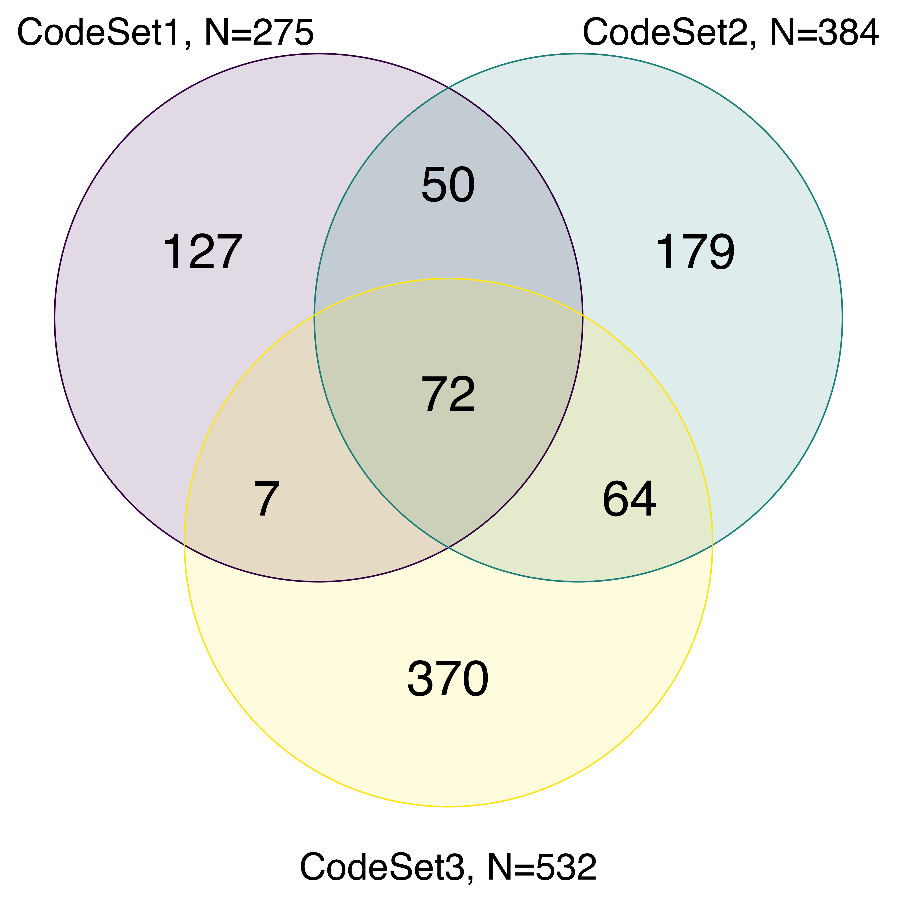
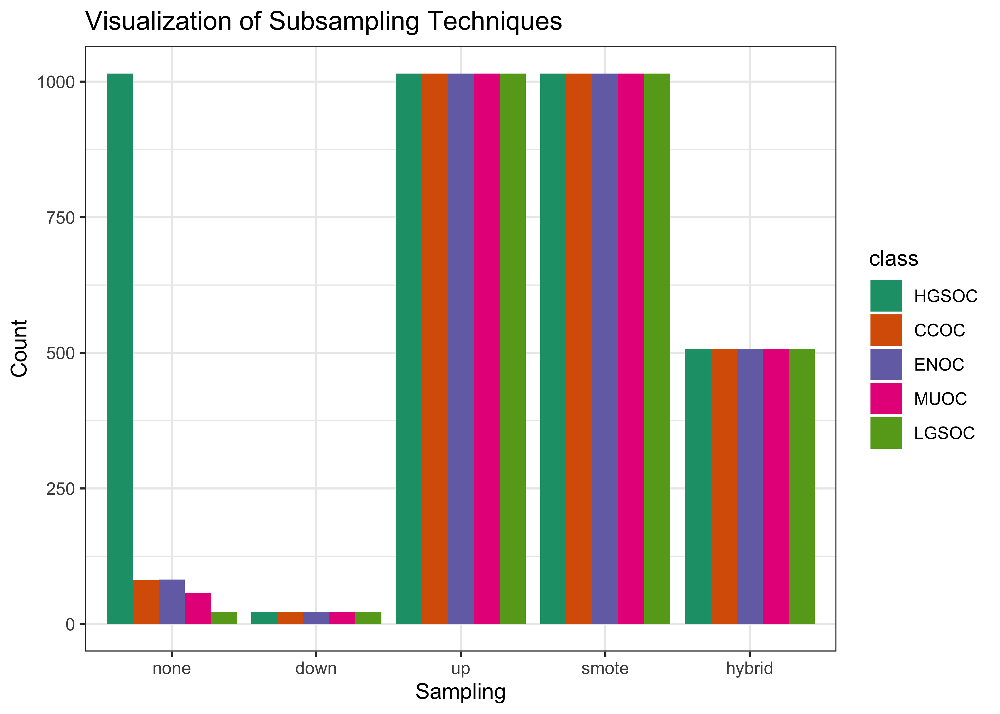

2 Methods
2.1 Pre-Processing
2.1.1 Case Selection
Prior to pre-processing, samples were split into a training, a confirmation, and a validation set.
- Training
- CS1: OOU, OOUE, VOA, MAYO, MTL
- CS2: OOU, OOUE, VOA, MAYO, OVAR3, OVAR11, JAPAN, MTL, POOL-CTRL
- CS3: OOU, OOUE, VOA, POOL-1, POOL-2, POOL-3
- Confirmation:
- CS3: TNCO
- Validation:
- CS3: DOVE4
2.1.2 Quality Control
Before normalization, we calculated several quality control measures and excluded samples that failed to achieve sample quality in one or more of these measures.
- Linearity of positive control genes: If the R-squared from a linear model of positive controls and their concentrations is less than 0.95 or missing, then the sample is flagged.
- Imaging quality: The sample is flagged if the field of view percentage is less than 75%.
- Positive Control flag: We consider the two smallest positive controls at concentrations 0.5 and 1. If these two controls are less than the lower limit of detection (defined as two standard deviations below the mean of the negative control expression), or if the mean negative control expression is 0, the sample is flagged.
- The signal-to-noise ratio or percent of genes detected: These two measures are defined as the ratio of the average housekeeping gene expression over the upper limit of detection, defined as two standard deviations above the mean of the negative control expression (or 0 if this limit is less than 0.001), and the proportion of endogenous genes with expression greater than the upper limit of detection. These measures are flagged if they are below a pre-specified threshold, which is determined visually by considering their bivariate distribution in a scatterplot. In this case, we used 100 for the SNR threshold and 50% for the threshold for genes detected. Note: these thresholds were determined by examining the relationship in Section 3.3.2.
2.1.3 Housekeeping Genes Normalization
The full training set (n=1257) comprised of data from three CodeSets (CS) 1, 2, and 3. Data normalization removes technical variation from high-throughput platforms to improve the validity of comparative analyses.
Each CodeSet was first normalized to housekeeping genes: ACTB, RPL19, POLR1B, SDHA, and PGK1. Housekeeping genes encode proteins responsible for basic cell function and have consistent expression in all cells. All expression values were log2 transformed. Normalization to housekeeping genes corrects the viable RNA from each sample. This is achieved by subtracting the average log (base 2)-transformed expression of the housekeeping genes from the log (base 2)-transformed expression of each gene:
\[log_2(\text{endogenous gene expression}) - \text{average(}log_2(\text{housekeeping gene expresssion})) = \text{relative expression} \tag{2.1}\]
2.1.4 Between CodeSet and Site Normalization
To normalize between CodeSets, we randomly selected five specimens, one from each histotype, among specimens repeated in all three CodeSets. This formed the reference set (Random 1). We selected only one sample from each histotype to use as few samples as possible for normalization and retain the rest for analysis.
A reference-based approach (Talhouk et al. (2016)) was used to normalize CS1 to CS3 and CS2 to CS3 across their common genes:
\[\begin{aligned} \text{X-Norm}_{\text{CS1}} = X_{\text{CS1}} + {\bar{R}_{\text{CS3}}} - {\bar{R}_{\text{CS1}}} \\ \text{X-Norm}_{\text{CS2}} = X_{\text{CS2}} + {\bar{R}_{\text{CS3}}} - {\bar{R}_{\text{CS2}}} \end{aligned} \tag{2.2}\]
Samples in CS3 were processed at three different locations; we also had to normalize for “site” in this CodeSet. Finally, the CS3 expression samples were included in the training set without further normalization:
\[\begin{aligned} \text{X-Norm}_{\text{CS3-USC}} = X_{\text{CS3-USC}} + {\bar{R}_{\text{CS3-VAN}}} - {\bar{R}_{\text{CS3-USC}}} \\ \text{X-Norm}_{\text{CS3-AOC}} = X_{\text{CS3-AOC}} + {\bar{R}_{\text{CS3-VAN}}} - {\bar{R}_{\text{CS3-AOC}}} \end{aligned} \tag{2.3}\]
The CS3 expression samples were included in the training set without further normalization. CS3 cross-site replicates were all chosen from Vancouver, thus we did not retain any samples from USC or AOC. Finally, the initial training set is assembled by combining the normalized datasets for CS1 and CS2 along with the CS3 expression not used in normalization:
\[\begin{aligned} \text{Training Set} &= \text{X-Norm}_{\text{CS1}} + \text{X-Norm}_{\text{CS2}} + \text{X}_{\text{CS3-VAN}} + \text{X-Norm}_{\text{CS3-USC}} + \text{X-Norm}_{\text{CS3-AOC}} \\ &= \text{X-Norm}_{\text{CS1}} + \text{X-Norm}_{\text{CS2}} + \text{X}_{\text{CS3}} \end{aligned} \tag{2.4}\]
2.1.5 Final Processing
We map ovarian histotypes to all remaining samples and keep the major histotypes for building the predictive model: high-grade serous ovarian carcinoma (HGSOC), clear cell ovarian carcinoma (CCOC), endometrioid ovarian carcinoma (ENOC), mucinous ovarian carcinoma (MUOC), and low-grade serous ovarian carcinoma (LGSOC).
Duplicate cases (two samples with the same ottaID) were removed before generating the final training set to use for fitting the classification models. All CS3 cases were preferred over CS1 and CS2, and CS3-Vancouver cases were preferred over CS3-AOC and CS3-USC when selecting duplicates.
The final training set used only genes that were common across all three CodeSets.
2.2 Classifiers
We used a supervised learning framework to train four multinomial classification algorithms in the Training Set. The full prediction model pipeline was run using SLURM batch jobs submitted to a partition on a Rocky 9 server. All resampling techniques, pre-processing, model specification, hyperparameter tuning, and evaluation metrics were implemented using the tidymodels suite of packages in R (v4.5.2). The classifiers we used are:
- Random Forest (
rf) - Support Vector Machine (
svm) - XGBoost (
xgb) - Regularized Multinomial Regression (
mr)
2.2.1 Resampling of Training Set
We used a nested cross-validation design to evaluate each classifier and perform hyperparameter tuning. An outer 5-fold CV stratified by histotype, along with an inner 5-fold CV with two repeats also stratified by histotype, ensured that the test sets of the inner dataset contained a reasonable number of cases from the smallest minority class.
The hyperparameter combination that yielded the highest average F1 score across the inner training sets was selected for assessing prediction performance in the outer training loop. We avoided using the bootstrap method for outer resampling to prevent overlap between the training and test sets caused by sampling with replacement. This overlap could lead to inflated performance estimates, as some observations would be used for both training and evaluation in the inner loop.
2.2.2 Hyperparameter Tuning
The following specifications for each classifier were used for tuning hyperparameters:
rf: The number of trees was fixed at 500. Two other hyperparameters were tuned across 10 randomly selected points in a space-filling parameter grid design:
mtry: number of randomly selected predictors
min_n: minimal node size
xgb: The number of trees was fixed at 500. Seven other hyperparameters were tuned across 10 randomly selected points in a space-filling parameter grid design:
mtry: number of randomly selected predictors
min_n: minimal node size
tree_depth: maximum depth of the tree (splits)
learn_rate: rate at which the boosting algorithm adapts from iteration-to-iteration (shrinkage parameter)
loss_reduction: reduction in the loss function required to split further
sample_size: proportion of observations exposed to fitting routine
stop_iter: number of iterations without improvement before stopping
svm: The cost and sigma hyperparameters were tuned across 10 randomly selected points in a space-filling parameter grid design. We tuned the cost parameter in the range [1, 8]. The range for tuning the sigma parameter was obtained from the 10% and 90% quantiles of the estimates from the kernlab::sigest() function.
mr: The penalty (lambda) and mixture (alpha) hyperparameters were tuned across 100 randomly selected points in a space-filling parameter grid design.
The hyperparameter combination that resulted in the highest average F1-score across the inner training sets was selected for each classifier to use as the model for assessing prediction performance in the outer training loop.
2.2.3 Subsampling
One of the main concerns in the analysis is that the distribution of the five main histotypes is highly imbalanced, which has implications for the accuracy of the classifier. To mitigate this, we investigated several strategies based on subsampling approaches:
- None: No subsampling is performed
- Down-sampling: All levels except the minority class are sampled down to the same frequency as the minority class
- Up-sampling: All levels except the majority class are sampled up to the same frequency as the majority class
- SMOTE: All levels except the majority class have synthetic data generated until they have the same frequency as the majority class
- Hybrid: All levels except the majority class have synthetic data generated up to 50% of the frequency of the majority class, then the majority class is sampled down to the same frequency as the rest.
Figure 2.3 helps visualize how the distribution of classes changes when we apply subsampling techniques to handle class imbalance:

All subsampling methods to mitigate class imbalance were applied within the inner CV loop.
2.2.4 Workflows
The four algorithms and five subsampling methods created 20 unique classification workflows. For example, the hybrid_xgb workflow pre-processes the training set by applying a hybrid subsampling method and subsequently uses the XGBoost algorithm to classify ovarian histotypes. We additionally tested two ensemble algorithms, the two-step, and the sequential algorithms described in the following sections.
2.3 Two-Step Algorithm
The HGSOC histotype comprises most cases among ovarian carcinoma patients, while the remaining patients are uniformly split across ENOC, CCOC, MUOC, and LGSOC histotypes. We can implement a two-step algorithm as such:
Step 1: Select the best classifier to predict HGSOC vs. non-HGSOC, using the workflow with the best per-class F1-score for HGSOC when fit to a 5-class prediction model
Step 2: remove HGSOCs from the dataset and re-train a 4-class multinomial classifier to predict the four remaining non-HGSOC histotypes. Select the workflow with the best macro-averaged F1-score when fit to a 4-class prediction model.
Let
\[\begin{aligned} & X_k = \text{Training data with k classes} \\ & C_k = \text{Class with highest}\;F_1\;\text{score from training}\;X_k \\ & W_k = \text{Workflow associated with}\;C_k \end{aligned} \tag{2.5}\]
Figure 2.4 shows how the two-step algorithm works:
2.3.1 Aggregating Predictions
The aggregation for two-step predictions is quite straightforward:
- Predict HGSOC vs. non-HGSOC
- Among all non-HGSOC cases, predict CCOC vs. LGSOC vs. MUOC vs. ENOC
2.4 Sequential Algorithm
Instead of training on k classes simultaneously using multinomial classifiers, we can use a sequential algorithm that iteratively performs one-vs-all binary classifications k-1 times to obtain a final prediction of all cases. At each step in the sequence, we classify one class vs. all other classes, where the classes that make up the “other” class are those not equal to the current “one” class and exclude all “one” classes from previous steps. For example, if the “one” class in step 1 was HGSOC, the “other” classes would include CCOC, ENOC, LGSOC, and MUOC. If the “one” class in step 2 was CCOC, the “other” classes would include ENOC, LGSOC, and MUOC.
The order of classes and workflows to use at each step in the sequential algorithm is determined after removing the data associated with an already classified class and retraining using the remaining data multinomial classifiers, as described before. The class and workflow to use for the next step in the sequence are selected based on the best per-class evaluation metric value (e.g., F1-score).
Figure 2.6 illustrates how the sequential algorithm works for K=5, using ovarian histotypes as an example for the classes.
2.4.1 Aggregating Predictions
We have to aggregate the one-vs-all predictions from each of the sequential algorithm workflows in order to obtain a final class prediction on a holdout test set. Each sequential workflow has to be assessed on every sample to ensure that cases classified into the “other” class from a previous step of the sequence are eventually assigned to a predicted class. For example, if based on certain class-specific metrics, we determined that the order of classes in the sequential algorithm was to predict HGSC vs. non-HGSC, CCOC vs. non-CCOC, LGSOC vs. non-LGSOC, and then MUOC vs. ENOC. Figure 2.7 illustrates how the final predictions are assigned:
2.5 Performance Evaluation
2.5.1 Class Metrics
We use accuracy, sensitivity, specificity, F1-score, kappa, and balanced accuracy, as class metrics to measure both training and test performance between different workflows. Multiclass extensions of these metrics can be calculated except for F1-score, where we use macro-averaging to obtain an overall metric. Class-specific metrics are calculated by recoding classes into one-vs-all categories for each class.
2.5.1.1 Accuracy
The accuracy is defined as the proportion of correct predictions out of all cases:
\[\text{accuracy} = \frac{TP}{TP + FP + FN + TN} \tag{2.6}\]
2.5.1.2 Sensitivity
Sensitivity is the proportional of correctly predicted positive cases, out of all cases that were truly positive
\[\text{sensitivity} = \frac{TP}{TP + FN} \tag{2.7}\]
2.5.1.3 Specificity
Specificity is the proportional of correctly predicted negative cases, out of all cases that were truly negative.
\[\text{specificity} = \frac{TN}{TN + FP} \tag{2.8}\]
2.5.1.4 F1-Score
The F-measure can be thought of as a harmonic mean between precision and recall:
\[F_{meas} = \frac{(1 + \beta^2) \times precision \times recall}{(\beta^2 \times precision) + recall} \tag{2.9}\]
The \(\beta\) value can be adjusted to place more weight upon precision or recall. The most common value is \(\beta\) is 1, which is also commonly known as the F1-score. A multiclass extension doesn’t exist for the F1-score, so we use macro-averaging to calculate this metric when there are more than two classes. For example, with \(k\) classes, the macro-averaged F1-score is equal to:
\[{F_1}_{macro} = \frac{1}{k} \sum_{i=1}^{k}{F_1}_{i} \tag{2.10}\]
where each \({F_1}_{i}\) is the F1-score computed frrom recoding classes into \(k=i\) vs. \(k \neq i\).
In situations where there is not at least one predicted case for each of the classes (e.g. for a poor classifier), \({F_1}_{i}\) is undefined because the per-class precision of class \(i\) is undefined. Those \({F_1}_{i}\) terms are removed from the \({F_1}_{macro}\) equation and the resulting value may be inflated. Interpreting the F1-score in such a case would be misleading.
2.5.1.5 Balanced Accuracy
Balanced accuracy is the arithmetic mean of sensitivity and specificity.
\[\text{Balanced Accuracy} = \frac{\text{Sensitivity} + \text{Specificity}}{2} \tag{2.11}\]
2.5.1.6 Kappa
Kappa is the defined as:
\[\text{kappa} = \frac{p_0 - p_e}{1 - p_e} \tag{2.12}\]
where \(p_0\) is the observed agreement among raters and \(p_e\) is the hypothetical probability of agreement due to random chance.
2.5.2 AUC
The area under the receiver operating curve (AUC) is calculated by adding up the area under the curve formed by plotting sensitivity vs. 1 - specificity. The Hand-till method is used as a multiclass extension for the AUC.
We did not use AUC to measure class-specific training set performance because combining predicted probabilities in a one-vs-all fashion might be potentially misleading. The sum of probabilities that add up to the “other” class is not equivalent to the predicted probability of the “other” class when using a multiclass classifier.
Instead, we only reported ROC curves and their associated AUCs for test set performance among the highest ranked algorithms.
2.6 Rank Aggregation
To select the best algorithm, we implemented a two-stage rank aggregation procedure using the Genetic Algorithm (Pihur et al. 2009). First, we ranked all workflows based on per-class F1-scores, balanced accuracy, and kappa to see which workflows performed well in predicting all five histotypes. Then, we took the ranks from these three performance metrics and performed a second run of rank aggregation. The top 5 workflows were determined from the final rank aggregation result.
2.7 Gene Optimization
We want to discover an optimal set of genes for the classifiers while including specific genes from other studies such as PrOTYPE and SPOT. A total of 72 genes are used in the classifier training set.
The classifier set includes 16 genes that overlap with the PrOTYPE classifier: COL11A1, CD74, CD2, TIMP3, LUM, CYTIP, COL3A1, THBS2, TCF7L1, HMGA2, FN1, POSTN, COL1A2, COL5A2, PDZK1IP1, FBN1.
The classifier set also includes 13 genes that overlap with the SPOT signature: HIF1A, CXCL10, DUSP4, SOX17, MITF, CDKN3, BRCA2, CEACAM5, ANXA4, SERPINE1, TCF7L1, CRABP2, DNAJC9.
We obtain 28 genes from the union of PrOTYPE and SPOT genes that we want to include in the final classifier, regardless of model performance. We then incrementally add genes one at a time from the remaining 44 candidate genes based on a variable importance rank to the set of 28 base genes and recalculate performance metrics. The optimal number of genes is determined by the number of genes needed to achieve the highest average F1-Score across classes, including the overall metric in the average. We use an F1-score that is averaged across cross-validation folds (5) and class groups (6: Overall, HGSOC, CCOC, ENOC, MUOC, LGSOC) to compare performance between different number of genes selected.
Here is the breakdown of genes used and whether they belong to the PrOTYPE and/or SPOT sets:
| Genes | PrOTYPE | SPOT |
|---|---|---|
| TCF7L1 | ✔ | ✔ |
| COL11A1 | ✔ | |
| CD74 | ✔ | |
| CD2 | ✔ | |
| TIMP3 | ✔ | |
| LUM | ✔ | |
| CYTIP | ✔ | |
| COL3A1 | ✔ | |
| THBS2 | ✔ | |
| HMGA2 | ✔ | |
| FN1 | ✔ | |
| POSTN | ✔ | |
| COL1A2 | ✔ | |
| COL5A2 | ✔ | |
| PDZK1IP1 | ✔ | |
| FBN1 | ✔ | |
| HIF1A | ✔ | |
| CXCL10 | ✔ | |
| DUSP4 | ✔ | |
| SOX17 | ✔ | |
| MITF | ✔ | |
| CDKN3 | ✔ | |
| BRCA2 | ✔ | |
| CEACAM5 | ✔ | |
| ANXA4 | ✔ | |
| SERPINE1 | ✔ | |
| CRABP2 | ✔ | |
| DNAJC9 | ✔ | |
| C10orf116 | ||
| GAD1 | ||
| TPX2 | ||
| KGFLP2 | ||
| EGFL6 | ||
| KLK7 | ||
| PBX1 | ||
| LIN28B | ||
| TFF3 | ||
| MUC5B | ||
| FUT3 | ||
| STC1 | ||
| BCL2 | ||
| PAX8 | ||
| GCNT3 | ||
| GPR64 | ||
| ADCYAP1R1 | ||
| IGKC | ||
| BRCA1 | ||
| IGJ | ||
| TFF1 | ||
| MET | ||
| CYP2C18 | ||
| CYP4B1 | ||
| SLC3A1 | ||
| EPAS1 | ||
| HNF1B | ||
| IL6 | ||
| ATP5G3 | ||
| DKK4 | ||
| SENP8 | ||
| CAPN2 | ||
| C1orf173 | ||
| CPNE8 | ||
| IGFBP1 | ||
| WT1 | ||
| TP53 | ||
| SEMA6A | ||
| SERPINA5 | ||
| ZBED1 | ||
| TSPAN8 | ||
| SCGB1D2 | ||
| LGALS4 | ||
| MAP1LC3A |
2.7.1 Variable Importance
Variable importance is calculated using either a model-based approach if it is available, or a permutation-based VI score otherwise (e.g., for SVM). The variable importance scores are averaged across the outer training folds, and then ranked from highest to lowest.
For the sequential and two-step classifiers, we calculate an overall VI rank by taking the cumulative union of genes at each variable importance rank across all sequences, until all genes have been included.
The variable importance measures are:
Random Forest: impurity measure (Gini index)
XGBoost: gain (fractional contribution of each feature to the model based on the total gain of the corresponding features’s splits)
SVM: permutation based p-values
Multinomial regression: absolute value of estimated coefficients at cross-validated lambda value